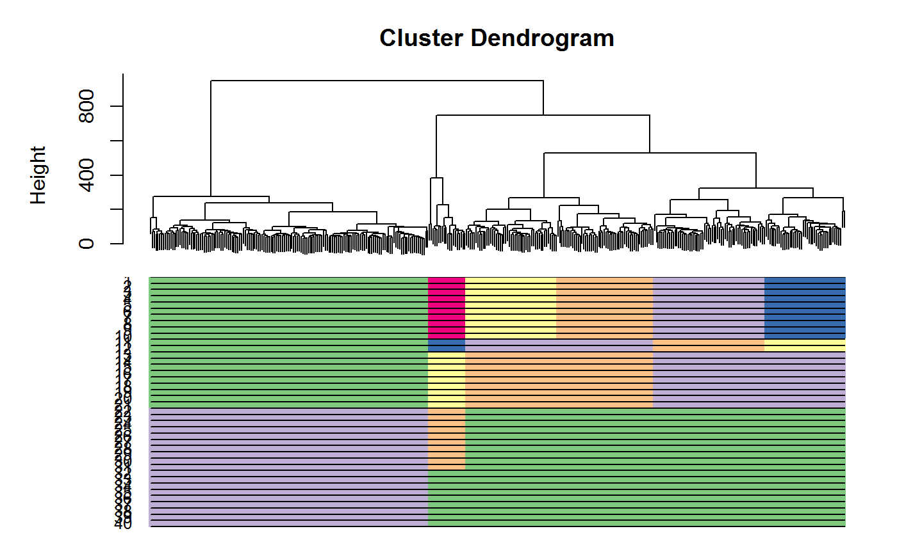
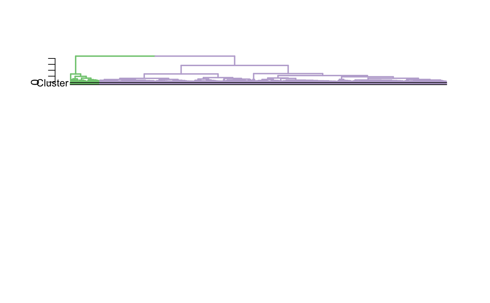

CORE_scGPS_bagging.RdCORE is an algorithm to generate reproduciable clustering, CORE is first implemented in ascend R package. Here, CORE V2.0 uses bagging analysis to find a stable clustering result and detect rare clusters mixed population.
CORE_scGPS_bagging(mixedpop = NULL, bagging_run = 10, subsample_proportion = 0.8, windows = seq(0.025:1, by = 0.025), remove_outlier = c(0), nRounds = 1, PCA = FALSE, nPCs = 20, ngenes = 1500)
| mixedpop | is a SingleCellExperiment object from the train mixed population. |
|---|---|
| bagging_run | an integer specifying the number of bagging runs to be computed. |
| subsample_proportion | a numeric specifying the proportion of the tree to be chosen in subsampling. |
| windows | a numeric vector specifying the ranges of each window. |
| remove_outlier | a vector containing IDs for clusters to be removed the default vector contains 0, as 0 is the cluster with singletons. |
| nRounds | an integer specifying the number rounds to attempt to remove outliers. |
| PCA | logical specifying if PCA is used before calculating distance matrix. |
| nPCs | an integer specifying the number of principal components to use. |
| ngenes | number of genes used for clustering calculations. |
a list with clustering results of all iterations, and a
selected
optimal resolution
day5 <- sample2 cellnames<-colnames(day5$dat5_counts) cluster <-day5$dat5_clusters cellnames <- data.frame('cluster' = cluster, 'cellBarcodes' = cellnames) #day5$dat5_counts needs to be in a matrix format mixedpop2 <-NewscGPS_SME(ExpressionMatrix = day5$dat5_counts, GeneMetadata = day5$dat5geneInfo, CellMetadata = day5$dat5_clusters) test <- CORE_scGPS_bagging(mixedpop2, remove_outlier = c(1), PCA=FALSE, bagging_run = 20, subsample_proportion = .8)#> [1] "Performing 1 round of filtering" #> [1] "Identifying top variable genes" #> [1] "Calculating distance matrix" #> [1] "Performing hierarchical clustering" #> [1] "Finding clustering information" #> [1] "Found 128 cells as outliers at round 1 ..." #> [1] "Identifying top variable genes" #> [1] "Calculating distance matrix" #> [1] "Performing hierarchical clustering" #> [1] "Finding clustering information" #> [1] "Found 111 cells as outliers at round 2 ..." #> [1] "Select 2 removal rounds if you want to remove these cells" #> [1] "372 cells left after filtering" #> [1] "Running 20 bagging runs, with 0.8 subsampling..." #> [1] "Done clustering, moving to stability calculation..." #> [1] "Done calculating stability..." #> [1] "Start finding optimal clustering..." #> [1] "Done calculating stability..." #> [1] "Start finding optimal clustering..." #> [1] "Done calculating stability..." #> [1] "Start finding optimal clustering..." #> [1] "Done calculating stability..." #> [1] "Start finding optimal clustering..." #> [1] "Done calculating stability..." #> [1] "Start finding optimal clustering..." #> [1] "Done calculating stability..." #> [1] "Start finding optimal clustering..." #> [1] "Done calculating stability..." #> [1] "Start finding optimal clustering..." #> [1] "Done calculating stability..." #> [1] "Start finding optimal clustering..." #> [1] "Done calculating stability..." #> [1] "Start finding optimal clustering..." #> [1] "Done calculating stability..." #> [1] "Start finding optimal clustering..." #> [1] "Done calculating stability..." #> [1] "Start finding optimal clustering..." #> [1] "Done calculating stability..." #> [1] "Start finding optimal clustering..." #> [1] "Done calculating stability..." #> [1] "Start finding optimal clustering..." #> [1] "Done calculating stability..." #> [1] "Start finding optimal clustering..." #> [1] "Done calculating stability..." #> [1] "Start finding optimal clustering..." #> [1] "Done calculating stability..." #> [1] "Start finding optimal clustering..." #> [1] "Done calculating stability..." #> [1] "Start finding optimal clustering..." #> [1] "Done calculating stability..." #> [1] "Start finding optimal clustering..." #> [1] "Done calculating stability..." #> [1] "Start finding optimal clustering..." #> [1] "Done calculating stability..." #> [1] "Start finding optimal clustering..."plot_CORE(test$tree, list_clusters = test$Cluster)plot_optimal_CORE(original_tree= test$tree, optimal_cluster = unlist(test$Cluster[test$optimal_index]), shift = -100)#> [1] "Ordering and assigning labels..." #> [1] 2 #> [1] 14 201 #> [1] "Plotting the colored dendrogram now...."#> [1] "Plotting the bar underneath now...."